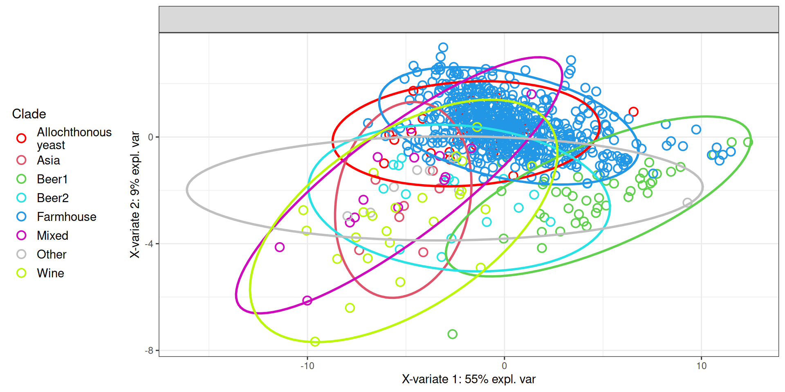
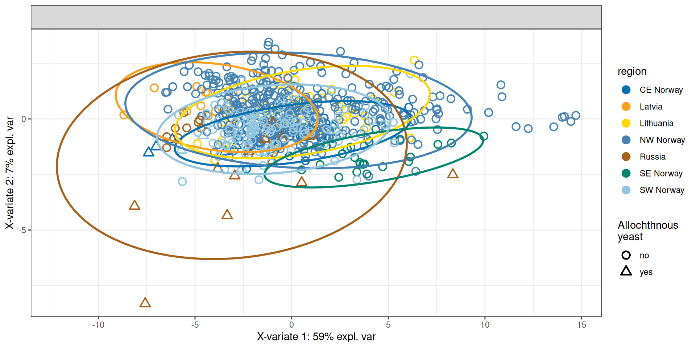
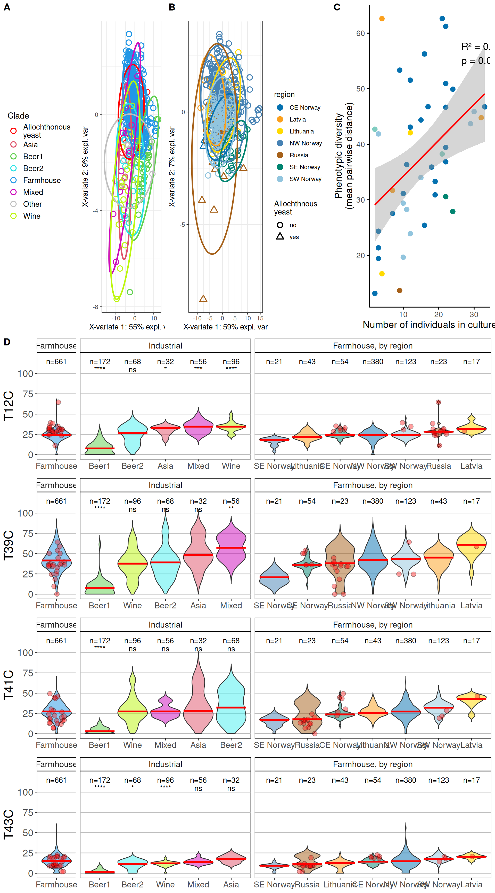

11 Figure 5
11.1 Figure 5 code
11.1.1 Panel A code
# import and prep data
raw_data = read.delim("./data/p02-05/grouped phenotype data with annotations.csv", sep = ",", header = TRUE)
raw_data = raw_data %>%
dplyr::filter(group != "WL004") %>%
dplyr::filter(group != "LA001")
raw_data$Industry = ifelse(
raw_data$region %in% c("South-West Norway", "Lithuania", "North-West Norway", "Russia",
"Central-Eastern Norway", "Latvia", "South-Eastern Norway"),
"Farmhouse",
raw_data$region
)
raw_data$Industry = ifelse(
raw_data$Outside == "yes",
"Allochthonous\nyeast",
raw_data$Industry
)
raw_data$region = ifelse(
raw_data$Industry == "Farmhouse",
raw_data$region,
"NA"
)
raw_data$region = ifelse(
raw_data$culture %in% c("7", "38"),
"South-West Norway",
ifelse(
raw_data$culture == "40",
"Russia",
ifelse(
raw_data$culture == "45",
"Latvia",
ifelse(
raw_data$culture == "57",
"Central-Eastern Norway",
raw_data$region
)
)
)
)
raw_data = raw_data %>%
dplyr::mutate(region = dplyr::case_when(
region == "South-West Norway" ~ "SW Norway",
region == "North-West Norway" ~ "NW Norway",
region == "Central-Eastern Norway" ~ "CE Norway",
region == "South-Eastern Norway" ~ "SE Norway",
.default = as.character(region)
))
metadata = raw_data %>%
dplyr::select(c("group", "culture", "region", "Industry", "Outside", "method"))
rownames(metadata) = metadata$group
rownames(raw_data) = raw_data$group
counts = raw_data %>%
dplyr::select(-c("group", "culture", "region", "Industry", "Outside", "method"))
# import final clade list
final_clades = read.table(
"data/p02-05/final_clades_for_pub.txt",
sep = "\t",
header = TRUE,
stringsAsFactors = FALSE
)
# replace
for(i in 1:nrow(final_clades)){
strain = final_clades[i, "Strain"]
clade = final_clades[i, "Clade"]
metadata[which(metadata$group == strain), "Industry"] = clade
}
metadata$Industry = ifelse(metadata$Industry == "Beer", "Beer2", metadata$Industry)
metadata$Industry = ifelse(metadata$group == "BI001", "Asia", metadata$Industry)
metadata$Industry = ifelse(metadata$group == "BR003", "Mixed", metadata$Industry)
metadata$Industry = ifelse(metadata$group == "BI002", "Other", metadata$Industry)
metadata$Industry = ifelse(metadata$group == "BI004", "Asia", metadata$Industry)
metadata$Industry = ifelse(metadata$group == "BI005", "Other", metadata$Industry)
## background: no farmhouse
metadata_no_farm = metadata[which(metadata$Industry != "Farmhouse"), ]
counts_no_farm = counts[which(rownames(counts) %in% metadata_no_farm$group), ]
## farmhouse focus
metadata_farm_only = metadata[which(metadata$Industry %in% c("Farmhouse", "Allochthonous\nyeast")), ]
colnames(metadata_farm_only)[5] = "Allochthonous"
metadata_farm_only$Allochthonous = ifelse(metadata_farm_only$Allochthonous == "yes", "yes", "no")
counts_farm_only = counts[which(rownames(counts) %in% metadata_farm_only$group), ]
# sPLS-DA
counts_splsda = sapply(
counts,
function(counts) (counts-mean(counts))/stats::sd(counts)
)
# initial sPLS_DA
initial_splsda = mixOmics::splsda(
counts_splsda,
factor(metadata$Industry),
ncomp = 10
) # set ncomp to 10 for performance assessment later
metadata$mock = "mock"
p_all_spls = mixOmics::plotIndiv(
initial_splsda,
comp = c(1, 2),
group = factor(metadata$Industry),
pch = factor(metadata$mock),
ind.names = FALSE,
ellipse = TRUE,
legend = TRUE,
legend.position = "left",
legend.title = "Clade",
title = "",
col = c("red", "#df536b", "#61d04f", "#28e2e5", "#2297e6", "#cd0bbc", "grey75", "#bcf60c")
)
11.1.2 Panel B code
# initial sPLS_DA
initial_splsda = mixOmics::splsda(
counts_farm_only,
factor(metadata_farm_only$region),
ncomp = 10
) # set ncomp to 10 for performance assessment later
p_farm_spls = mixOmics::plotIndiv(
initial_splsda,
comp = c(1, 2),
group = factor(metadata_farm_only$region),
pch = factor(metadata_farm_only$Allochthonous),
ind.names = FALSE,
ellipse = TRUE,
legend = TRUE,
legend.position = "left",
legend.title = "region",
legend.title.pch = "Allochthnous\nyeast",
title = "",
col = c('#0571B0', '#FBA01D',"#FFDA00", "steelblue", '#A6611A',"#008470",'#92C5DE')
)
11.1.3 Panel C code
# Load the dataset
mydata <- read.csv('./data/p02-05/grouped phenotype data with annotations.csv')
# Define region colors
RegionColors <- c(
'North-West Norway' = '#0571B0',
'South-West Norway' = '#92C5DE',
'Central-Eastern Norway' = '#018571',
'South-Eastern Norway' = '#80CDC1',
'Latvia' = '#FFDA00',
'Lithuania' = '#FBA01D',
'Russia' = '#A6611A',
'Beer' = '#FF0000',
'Wine' = 'limegreen',
'Outside' = '#000000' # Black for the Outside group
)
# Create a new grouping variable:
# - "Outside" if Outside == "yes"
# - culture if available; otherwise, use region
mydata$grouping <- ifelse(
mydata$Outside == "yes", "Outside",
ifelse(is.na(mydata$culture), mydata$region, as.character(mydata$culture))
)
# Reorder the grouping factor with "Outside" first, then by region order
group_levels <- c("Outside", unique(mydata$grouping[mydata$grouping != "Outside"][order(mydata$region)]))
mydata$grouping <- factor(mydata$grouping, levels = group_levels)
# Select phenotypic data columns
phenotypic_data <- mydata %>% dplyr::select(Biggy:T43C)
# Calculate mean pairwise distance (multivariate diversity) per group
groupwise_distance <- mydata %>%
dplyr::group_by(grouping) %>%
dplyr::summarise(
Mean_Pairwise_Distance = mean(
vegdist(phenotypic_data[cur_group_rows(), ], method = "euclidean"),
na.rm = TRUE
),
n_individuals = n()
)
# Combine the diversity metrics with region information
total_diversity <- groupwise_distance %>%
left_join(mydata %>% dplyr::select(grouping, region) %>% distinct(), by = "grouping")
# (Optional) Check the diversity summary
print(total_diversity)# A tibble: 55 × 4
grouping Mean_Pairwise_Distance n_individuals region
<fct> <dbl> <int> <chr>
1 Outside 66.8 24 Russia
2 Outside 66.8 24 South-West Norway
3 Outside 66.8 24 Latvia
4 Outside 66.8 24 South-Eastern Norway
5 Wild 56.3 4 Wild
6 Beer 105. 72 Beer
7 Wine 72.1 18 Wine
8 Spirits 69.5 6 Spirits
9 Bread 80.8 4 Bread
10 Sake 55.6 7 Sake
# ℹ 45 more rows# Remove specific rows if needed
total_diversity <- total_diversity[-c(1:10, 54:55), ]
# Test correlation between Mean Pairwise Distance and Number of Individuals
cor_test_distance <- cor.test(total_diversity$n_individuals, total_diversity$Mean_Pairwise_Distance, method = "pearson")
print(cor_test_distance)
Pearson's product-moment correlation
data: total_diversity$n_individuals and total_diversity$Mean_Pairwise_Distance
t = 3.0334, df = 41, p-value = 0.004183
alternative hypothesis: true correlation is not equal to 0
95 percent confidence interval:
0.1466415 0.6454742
sample estimates:
cor
0.4281293 # Extract correlation results for annotation
r_squared <- round(cor_test_distance$estimate^2, 2)
p_value <- signif(cor_test_distance$p.value, 3)
# Plot: Mean Pairwise Distance vs. Number of Individuals (colored by Region)
# Remove the legend from this plot since the color scheme is shared.
p_diversity_individuals <- ggplot(total_diversity, aes(x = n_individuals, y = Mean_Pairwise_Distance, color = region)) +
geom_point(size = 3) +
geom_smooth(method = "lm", color = "red", se = TRUE) +
scale_color_manual(values = RegionColors) +
labs(
x = "Number of individuals in culture",
y = "Phenotypic diversity (mean pairwise distance)"
) +
theme_classic(base_size = 14) +
theme(
legend.position = "none",
axis.line.x = element_line(color = "black"),
axis.line.y = element_line(color = "black"),
axis.ticks = element_line(color = "black")
) +
annotate("text",
x = max(total_diversity$n_individuals) * 0.8,
y = max(total_diversity$Mean_Pairwise_Distance) * 0.9,
label = paste0("R² = ", r_squared, "\np = ", p_value),
size = 5, hjust = 0)
# ------------------------------
# Load the pairwise similarities dataset
pairwise_similarities <- read.csv('./data/p02-05/pairwise-similarities.csv')
# Ensure the culture column is character
pairwise_similarities$culture <- as.character(pairwise_similarities$culture)
# Add culture info to total_diversity from the original dataset
total_diversity <- total_diversity %>%
left_join(mydata %>% dplyr::select(grouping, culture) %>% distinct(), by = "grouping")
# Merge datasets based on the culture column
combined_data <- total_diversity %>%
left_join(pairwise_similarities, by = "culture")
# (Optional) Check the merged data structure
print(head(combined_data))# A tibble: 6 × 6
grouping Mean_Pairwise_Distance n_individuals region culture similarity
<fct> <dbl> <int> <chr> <chr> <dbl>
1 7 41.9 3 South-West N… 7 97.4
2 13 35.9 18 North-West N… 13 75.2
3 27 30.6 22 Central-East… 27 47.8
4 8 44.4 15 North-West N… 8 78.8
5 5 46.7 33 North-West N… 5 76.9
6 9 39.4 22 North-West N… 9 79.9# Test correlation between Mean Pairwise Distance and Similarity
cor_test_similarity_distance <- cor.test(combined_data$similarity, combined_data$Mean_Pairwise_Distance, method = "pearson")
print(cor_test_similarity_distance)
Pearson's product-moment correlation
data: combined_data$similarity and combined_data$Mean_Pairwise_Distance
t = -2.1192, df = 41, p-value = 0.04018
alternative hypothesis: true correlation is not equal to 0
95 percent confidence interval:
-0.56155297 -0.01530232
sample estimates:
cor
-0.3142021 # Extract correlation results for annotation
r_squared2 <- round(cor_test_similarity_distance$estimate^2, 2)
p_value2 <- signif(cor_test_similarity_distance$p.value, 3)
# Plot: Mean Pairwise Distance vs. Similarity
p_similarity_distance <- ggplot(combined_data, aes(x = similarity, y = Mean_Pairwise_Distance, color = region)) +
geom_point(size = 3) +
geom_smooth(method = "lm", color = "red", se = TRUE) +
scale_color_manual(values = RegionColors) +
labs(
x = "Culture strain similarity",
y = "Phenotypic diversity (mean pairwise distance)",
color = "Region"
) +
theme_classic(base_size = 14) +
theme(
axis.line.x = element_line(color = "black"),
axis.line.y = element_line(color = "black"),
axis.ticks = element_line(color = "black"),
legend.title = element_text(size = 14),
legend.text = element_text(size = 12)
) +
annotate("text",
x = (max(combined_data$similarity)-min(combined_data$similarity)) * 0.8 + min(combined_data$similarity),
y = max(combined_data$Mean_Pairwise_Distance) * 0.9,
label = paste0("R² = ", r_squared2, "\np = ", p_value2),
size = 5, hjust = 0)
# ------------------------------
# Combine and display the two plots side by side
panel_c <- p_diversity_individuals + p_similarity_distance11.1.4 Panel D code
pheno_list = c(
#"Biggy",
"T12C",
"T39C",
"T41C",
"T43C"
#"T37C",
#"EtOH_12",
#"CuSO4_0.1",
#"EtOH_10"
)
counts_long1 = counts %>%
dplyr::mutate(group = rownames(counts)) %>%
dplyr::left_join(metadata, by = "group") %>%
reshape2::melt() %>%
dplyr::filter(Industry %in% c("Farmhouse", "Allochthonous\nyeast")) %>%
dplyr::filter(variable %in% pheno_list)
counts_long1$category = counts_long1$region
counts_long1$Industry = "Farmhouse"
counts_long2 = counts %>%
dplyr::mutate(group = rownames(counts)) %>%
dplyr::left_join(metadata, by = "group") %>%
reshape2::melt() %>%
dplyr::filter(variable %in% pheno_list)
counts_long2$category = ifelse(
counts_long2$Industry %in% c("Farmhouse", "Allochthonous\nyeast"),
"Farmhouse",
counts_long2$Industry
)
counts_long2$region = counts_long2$category
counts_long3 = rbind(counts_long1, counts_long2)%>%
dplyr::filter(region != "Other")
counts_long3$category = ifelse(
counts_long3$category == "Allochthonous\nyeast", "Farmhouse", counts_long3$category
)
# counts_long3$region = ifelse(
# is.na(counts_long3$region),
# counts_long3$category,
# counts_long3$region
# )
counts_long3$region = factor(
counts_long3$region,
levels = c(
"SW Norway", "Lithuania", "NW Norway", "Russia",
"CE Norway", "Latvia", "SE Norway",
"Farmhouse", "Asia", "Beer1", "Beer2", "Mixed", "Wine"
)
)
counts_long3$facet_factor = ifelse(
counts_long3$region %in% c("SW Norway", "Lithuania", "NW Norway", "Russia",
"CE Norway", "Latvia", "SE Norway"),
"Farmhouse, by region",
ifelse(
counts_long3$region %in% c("Asia", "Beer1", "Beer2", "Mixed", "Wine"),
"Industrial",
"Farmhouse"
)
) %>% factor(
levels = c("Farmhouse", "Industrial", "Farmhouse, by region")
)
text_annot = matrix(nrow = 13, ncol = 3) %>% data.frame
colnames(text_annot) = c("category", "facet_factor", "value")
text_annot$category = c(
"Farmhouse",
"CE Norway", "Latvia", "Lithuania", "NW Norway", "Russia", "SE Norway", "SW Norway",
"Asia", "Beer1", "Beer2", "Mixed", "Wine"
)
text_annot$facet_factor = c(
"Farmhouse",
rep("Farmhouse, by region", 7),
rep("Industrial", 5)
)
text_annot$value = c(
661,
54, 17, 43, 380, 23, 21, 123,
32, 172, 68, 56, 96
)
color_annot = c(
'#df536b', # Asia
'#61d04f', # Beer1
'#46f0f0', # Beer2
"#008470", # CE Norway
'#2297e6', # Farmhouse
"#FFDA00", # Latvia
'#FBA01D', # Lithuania
'#cd0bbc', # Mixed
'#0571B0', # NW Norway
'#A6611A', # Russia
"steelblue", # SE Norway
'#92C5DE', # SW Norway
'#bcf60c' # wine
)
color_annot = stats::setNames(
color_annot,
counts_long3$category %>% factor() %>% levels()
)
p_violins_final = list()
for(k in 1:length(pheno_list)){
my_pheno = pheno_list[[k]]
tmp_df = counts_long3 %>% dplyr::filter(variable == my_pheno)
tests_pheno = tmp_df %>%
dplyr::filter(facet_factor %in% c("Farmhouse", "Industrial")) %>%
rstatix::t_test(value ~ Industry, ref.group = "Farmhouse")
tests_pheno_annot = matrix(nrow = 5, ncol = 3) %>% data.frame
colnames(tests_pheno_annot) = c("category", "facet_factor", "value")
tests_pheno_annot$category = c("Asia", "Beer1", "Beer2", "Mixed", "Wine")
tests_pheno_annot$facet_factor = c(rep("Industrial", 5))
tests_pheno_annot$value = c(
tests_pheno[2, "p.adj.signif"], tests_pheno[3, "p.adj.signif"], tests_pheno[4, "p.adj.signif"],
tests_pheno[5, "p.adj.signif"], tests_pheno[6, "p.adj.signif"]
)
p_violins_final[[k]] = ggplot(tmp_df,
aes(x = forcats::fct_reorder(category, value, median),
y = value)) +
geom_violin(aes(fill = category),
alpha = 0.5,
scale = "width",
trim = FALSE) +
geom_point(data = tmp_df %>% dplyr::filter(Outside == "yes"),
aes(x = category, y = value), fill = "red",
position = position_jitter(width = 0.25),
shape = 21,
alpha = 0.375,
size = 3) +
geom_text(data = text_annot,
aes(x = category, y = 115, label = paste0("n=", as.character(value)))) +
geom_text(data = tests_pheno_annot,
aes(x = category, y = 105, label = as.character(value))) +
stat_summary(fun = "median", colour = "red", geom = "crossbar") +
facet_grid(~ factor(facet_factor, levels = c("Farmhouse", "Industrial", "Farmhouse, by region")), scales = "free_x", space = "free") +
scale_y_continuous(breaks = c(0, 25, 50, 75, 100), limits = c(0, 120), ) +
scale_fill_manual(values = color_annot) +
scale_x_discrete(labels = function(x) stringr::str_wrap(x, width = 10)) +
labs(y = my_pheno) +
theme(title = element_blank(),
axis.text.x = element_text(size = 12),
axis.text.y = element_text(size = 14),
axis.title.x = element_blank(),
axis.title.y = element_text(size = 18),
legend.position = "none",
panel.background = element_rect(colour = "black", fill = NA),
panel.grid.major.x = element_blank(),
panel.grid.minor.x = element_blank(),
panel.grid.major.y = element_line(colour = "grey75"),
panel.grid.minor.y = element_blank(),
strip.background = element_rect(colour = "black", fill = NA),
strip.text = element_text(size = 12))
}11.1.5 Merge
final_plot = cowplot::plot_grid(
cowplot::plot_grid(
p_all_spls, p_farm_spls,
nrow = 1,
rel_widths = c(1, 1),
labels = c("A", "B")
),
panel_c,
cowplot::plot_grid(
p_violins_final[[1]], p_violins_final[[2]], p_violins_final[[3]],
p_violins_final[[4]],
ncol = 1,
labels = c("D", NA, NA, NA)
),
nrow = 3,
rel_heights = c(1.5, 1, 2.5)
)11.2 Figure 5 plot

11.3 Session Information
Note
R version 4.3.2 (2023-10-31)
Platform: x86_64-conda-linux-gnu (64-bit)
Running under: openSUSE Tumbleweed
Matrix products: default
BLAS/LAPACK: /home/andrea/miniforge3/envs/moai/lib/libmkl_rt.so.2; LAPACK version 3.9.0
locale:
[1] LC_CTYPE=en_US.UTF-8 LC_NUMERIC=C
[3] LC_TIME=it_IT.UTF-8 LC_COLLATE=en_US.UTF-8
[5] LC_MONETARY=en_US.UTF-8 LC_MESSAGES=en_US.UTF-8
[7] LC_PAPER=en_US.UTF-8 LC_NAME=C
[9] LC_ADDRESS=C LC_TELEPHONE=C
[11] LC_MEASUREMENT=en_US.UTF-8 LC_IDENTIFICATION=C
time zone: Europe/Brussels
tzcode source: system (glibc)
attached base packages:
[1] stats graphics grDevices utils datasets methods base
other attached packages:
[1] vegan_2.7-1 permute_0.9-7 umap_0.2.10.0 RColorBrewer_1.1-3
[5] PCAtools_2.14.0 patchwork_1.3.0 mixOmics_6.26.0 lattice_0.22-6
[9] MASS_7.3-60.0.1 ggrepel_0.9.6 ggplot2_3.5.1 forcats_1.0.0
[13] dplyr_1.1.4
loaded via a namespace (and not attached):
[1] tidyselect_1.2.1 farver_2.1.2
[3] fastmap_1.2.0 digest_0.6.37
[5] rsvd_1.0.5 lifecycle_1.0.4
[7] cluster_2.1.8 magrittr_2.0.3
[9] compiler_4.3.2 rlang_1.1.5
[11] tools_4.3.2 utf8_1.2.4
[13] igraph_2.1.4 yaml_2.3.10
[15] knitr_1.49 labeling_0.4.3
[17] askpass_1.2.1 S4Arrays_1.2.1
[19] dqrng_0.4.1 rARPACK_0.11-0
[21] htmlwidgets_1.6.4 reticulate_1.40.0
[23] DelayedArray_0.28.0 plyr_1.8.9
[25] abind_1.4-8 BiocParallel_1.36.0
[27] withr_3.0.2 purrr_1.0.2
[29] BiocGenerics_0.48.1 grid_4.3.2
[31] stats4_4.3.2 beachmat_2.18.1
[33] colorspace_2.1-1 scales_1.3.0
[35] cli_3.6.3 ellipse_0.5.0
[37] rmarkdown_2.29 crayon_1.5.3
[39] generics_0.1.3 RSpectra_0.16-2
[41] reshape2_1.4.4 DelayedMatrixStats_1.24.0
[43] stringr_1.5.1 splines_4.3.2
[45] zlibbioc_1.48.2 parallel_4.3.2
[47] XVector_0.42.0 matrixStats_1.5.0
[49] vctrs_0.6.5 Matrix_1.6-5
[51] carData_3.0-5 jsonlite_1.8.9
[53] car_3.1-3 BiocSingular_1.18.0
[55] IRanges_2.36.0 S4Vectors_0.40.2
[57] rstatix_0.7.2 Formula_1.2-5
[59] irlba_2.3.5.1 tidyr_1.3.1
[61] glue_1.8.0 codetools_0.2-20
[63] cowplot_1.1.3 stringi_1.8.4
[65] gtable_0.3.6 ScaledMatrix_1.10.0
[67] munsell_0.5.1 tibble_3.2.1
[69] pillar_1.10.1 htmltools_0.5.8.1
[71] openssl_2.3.1 R6_2.5.1
[73] sparseMatrixStats_1.14.0 evaluate_1.0.3
[75] backports_1.5.0 png_0.1-8
[77] broom_1.0.7 corpcor_1.6.10
[79] Rcpp_1.0.14 nlme_3.1-167
[81] gridExtra_2.3 SparseArray_1.2.4
[83] mgcv_1.9-1 xfun_0.50
[85] MatrixGenerics_1.14.0 pkgconfig_2.0.3